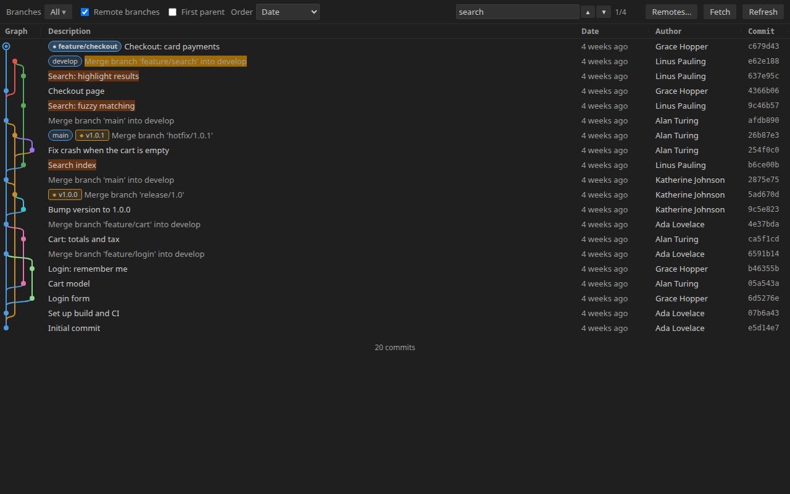
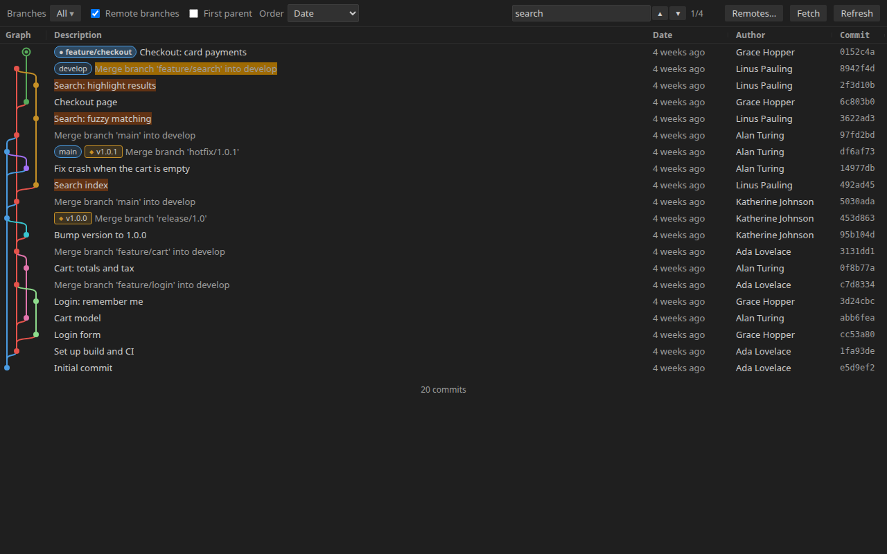

Git flow graph in VS Code: keep main and develop straight
In a git-flow repository, main holds releases, develop collects finished features, and short-lived feature/, release/ and hotfix/ branches come and go around them. A commit graph should make the two long-lived branches easy to follow. In most graph views it does not: their lines move from column to column as other branches start and end. This guide explains why, how to give main and develop their own straight columns on the left in Mergeline, how the other git-flow branches look then, and which commits count as “on” a branch.
Quick answers
| I want to… | Do |
|---|---|
Keep main and develop straight on the left | Nothing: the default of mergeline.pinnedBranches is ["main", "master", "develop"] (Mergeline 0.14 and later) |
| Pin one more branch | Right-click its badge in the graph, then Pin to its own column on the left |
| Pin every release branch | Add "release/*" to mergeline.pinnedBranches |
| Stop pinning a branch | Right-click its badge, then Unpin (stop keeping it in its own column) |
| Go back to the layout without pinned columns | "mergeline.pinnedBranches": [] |
List main’s line in a terminal | git log --oneline --first-parent main |
The screenshots on this page show a small git-flow test repository: main, develop, four merged feature branches, one release and one hotfix, all merged with --no-ff, and one open feature branch.
Why main and develop wander
A commit graph draws each line of history in a column (also called a lane): one vertical track of the graph, left of the commit messages. Most graph views hand out columns while they draw from the newest commit down. A line takes the leftmost free column when it starts and gives it back when it ends. So which branch gets the first column depends on which commits happen to be newest, and that changes with every commit anyone makes.

Above, without pinning: feature/checkout, the newest branch, has the first column, and develop’s merges share it further down. main’s two release merges are in the second column, and its first commit is back in the first. To follow main you have to trace a line that changes column and colour. The more feature branches there are, the worse this gets.
In the Git Graph extension this is a long-standing request: issue #207, “Persistent Branches get a dedicated column”, opened in November 2019. When we checked on 20 November 2026 it was still open, with 53 thumbs-up.
Pin branches in Mergeline
Mergeline is a free, MIT-licensed git graph for VS Code. From version 0.14 it can pin branches: each pinned branch gets its own column on the left, with a fixed colour, and its first-parent line is drawn straight down that column. No other branch’s line is drawn in a pinned column.

The same repository with the default setting. main is the blue line in the first column, from its tip at v1.0.1 down to the initial commit. develop is the red line in the second column. Feature, release and hotfix branches are drawn to the right.
- Check the defaults. The setting
mergeline.pinnedBranchesis a list of branch names. Its default,["main", "master", "develop"], covers the usual names, somain(ormaster) anddevelopare pinned without any change. - Pin or unpin from the graph. Right-click a branch badge, local or remote, and choose Pin to its own column on the left or Unpin (stop keeping it in its own column). This edits
mergeline.pinnedBranchesin your user settings, or in the workspace or folder settings if the setting is already defined there. A branch that is pinned only because it matches a pattern shows Pinned by a pattern in mergeline.pinnedBranches, greyed out; edit the pattern in settings to change it. - Or edit the list. Run Preferences: Open User Settings (JSON) and set the branches in the order you want their columns, left to right:
"mergeline.pinnedBranches": ["main", "develop", "release/*", "hotfix/*"]
Each entry is an exact branch name or a pattern in which*matches any text, including/. Write branch names without the remote:maincovers bothmainandorigin/main. - Turn it off with
"mergeline.pinnedBranches": []to get the layout from before 0.14.
Mergeline is not on the VS Code Marketplace yet. Download the .vsix from GitHub and run Extensions: Install from VSIX… (full steps).
How git-flow branches look pinned
With ["main", "develop", "release/*", "hotfix/*"]:
mainis the first column. Its line runs through the release and hotfix merges, so every tag you put on a merge sits in that column.developis the second column. Its line runs through the feature merges and through each “Merge branch ‘main’ into develop”. At the commit wheredevelopwas created frommain, it joinsmain’s column: a pinned line that reaches a commit already on an earlier pinned line ends there.release/*branches take the next column while they exist. A release branch’s line runs from its tip down to thedevelopcommit it was created from, and joinsdevelop’s column there. If several release branches match, the one with the newest tip goes furthest left.hotfix/*branches work the same way and joinmain’s column, since hotfixes start frommain.- Feature branches are not pinned. They use the columns to the right and are laid out as before: a column while the branch is open, freed when it is merged.
At most four columns are pinned, so the other branches keep enough distinct colours. The list above uses all four. Any branch beyond the fourth is laid out like an unpinned branch.
Which commits are on a pinned line
A pinned column shows the branch’s first-parent line: the commits you reach by starting at the branch tip and following each commit’s first parent. A merge commit has two parents. The first parent is the commit the branch was at when you merged, and the second is the tip of the branch you merged in. So when develop merges feature/search, the merge and the previous develop commit are on develop’s line, and the feature’s own commits are drawn to the side, joining at the merge. git log --first-parent explained covers first parents in detail.
This is why the way you merge shows up in the graph:
- Fast-forward merges leave no merge commit. The merged commits become part of the branch’s first-parent line and are drawn in its pinned column. Merging with
--no-ffkeeps them to the side. - A
git pullthat merges on a shared branch can swap the parents: your local commits become the first-parent line and the commits everyone else pushed move to the side. See when first parent misleads. - Squash and rebase merges create no merge commits, so the branch’s line is simply every commit on it.
Details and limits
- Local and remote share a column.
mainandorigin/mainare one pinned branch. Whichever tip is newer starts the line, so after a fetch that brought new commits, the line starts atorigin/mainand themainbadge sits on it further down. - The column stays empty above the tip. If other branches have newer commits than
main, the first column is blank abovemain’s tip rather than lending its space to them. - Uncommitted changes. When the checked-out branch is pinned, the “Uncommitted changes” row sits at the top of that branch’s column.
- A branch already on an earlier line gets no column. If
develop’s tip is a commit onmain’s line, for example right after creating it, it has nothing of its own to draw yet. It gets its column once it has its own commits. - Merged branches you keep still match. A release branch that was merged with
--no-ffbut not deleted still matchesrelease/*and still takes a column. Delete release and hotfix branches after finishing them, or pin by exact name instead of a pattern. - Only loaded commits count. A pinned branch whose tip is not among the loaded commits, for example because a branch filter hides it, gets no column. When you load more commits, the pinned lines continue in the same columns.
FAQ
How do I keep the main branch always on the left of the git graph?
Put it first in mergeline.pinnedBranches. The default list starts with main and master, so in most repositories it already is.
Can I pin a branch with a different name, such as trunk or production?
Yes. Right-click its badge and choose Pin to its own column on the left, or add the name to the list. The order of the list decides the order of the columns.
Why does develop’s line end in main’s column?
Because develop was created from a commit on main. From that commit down, the history belongs to main’s line, so develop’s line joins it there instead of repeating the same commits in a second column.
Does pinning change my repository?
No. It does not touch commits or branches; it only changes how the graph is drawn. Pinning and unpinning edit one VS Code setting.
How do I get the old layout back?
Set "mergeline.pinnedBranches": []. Every branch is then laid out the way it was before 0.14.
Related: git log --first-parent, branch graph in VS Code and filter by branch.